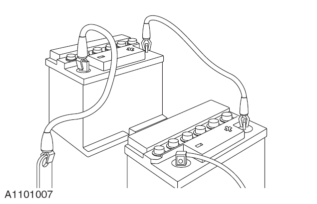

在维修车间维修汽车时应确保：
施加驻车制动或固定车轮防止汽车前后移动。
在汽车前方作业时，应取下点火钥匙。
如果要起动汽车发动机，应确保场地通风良好，或用废气集排管来排除废气。
必要时，应有足够的空间来举升汽车更换轮胎。
在电机机舱内进行维修时应有翼子板护垫。
在维修电机、在车底进行维修或举升汽车时应先切断蓄电池的电源。
当对汽车进行电弧焊时，应先断开发电机的线束，避免可能产生的过大电流损坏发电机内部构件。
如果在汽车上使用焊接设备，应在附近放置灭火器。
汽车在牵引过程中，将车辆设置为P挡，踩下制动踏板，在中控显示屏中点击“车辆→安全与维护→拖车模式”虚拟按键，点击弹框内确认按钮后，车辆将进入拖车模式，这样转向灯、喇叭和制动灯才能正常运转，否则会带来人身伤害。
可移动的拖钩有一个左旋螺纹，在牵引汽车前必须完全扭紧。在需要牵引汽车时，应使用牵引挂钩。牵引绳必须紧紧扣住挂钩，并且牵引绳必须接在另一辆汽车上以防绳索缠住车体。
在牵引自动变速的汽车时，自动变速汽车的牵引速度切忌超过40km/h 或拖车距离超过25 km。如果必须超长距离的牵引汽车，驱动轮必须完全离地。
汽车可用低地板拖车或牵引车进行运输。
如果用外部设备进行搭电时请确认，外部电源的正极接蓄电池正极“+”，外部电源负极接蓄电池负极“-”，如果不按此程序来可能会导致车辆发生不可恢复故障。
如果辅助蓄电池已充电并进行了气体处理，在连接跳线时应用塞子或用湿衣物盖上通风口，以减少连接跳线时电弧点火带来的爆炸危害。如果不按此程序来完成会带来人身伤害。
电流短路会使蓄电池放电，如果有放电现象，汽车在正常线路被切断后仍然存在带电线路。当接上跨接线时会导致电瓶外壳变形。
当车辆不能启动时，可认为跨接启动是使车辆启动的唯一可行方法。在此情况下，启动后放电的蓄电池必须立即再充电，以避免永久性的损坏。
必须检查跨接线是否能承受负荷，必须使用重负荷的导线。
必须保证辅助电瓶应具有与车辆蓄电池相同的电压。两蓄电池必须以并联的方式连接。
在跨接接线之前，必须检查可用开关控制的线路是否断开。这样，在进行最后接线时，会减少产生电弧的危险。

当将导线接到蓄电池上时，必须检查跨接线的端头未互相接触或通过车体接地。完全充好电的蓄电池，如通过跨接线短路时，能以1000 A 以上的电流放电，并产生强电弧。跨接线和接线柱的快速加热，甚至会使蓄电池爆炸。如不遵守此规则，则会造成人身伤害。
必须按以下顺序连接跨接线：
先连接辅助蓄电池的正极，然后是汽车蓄电池的正极。
辅助蓄电池的负极，然后另一端接在距汽车电瓶端头至少300 mm 的接地端，比如电机的吊耳上。
在拆开跨接线前应降低电机的速度。在把跨接线从有未充满电的蓄电池的汽车上移走前，打开鼓风机或后挡玻璃除霜以降低拆除跨接线时产生的高电压。
按连接的相反顺序拆走跨接线，切忌让跨接线的末段短路。
不能依靠发电机来恢复蓄电池的电量。因为如果用发电机来充电，必须在蓄电池无任何其他负荷时让发动机连续不断的工作8 h 以上。
为防止弄脏入口处，在拆走跨接线前应清除污垢堆积物、油脂、分解部件或总成。在重新组装时，应仔细清洗零部件然后再检查、组装。
清洗方法：
干洗
用柔软的刷子清除堆积的污垢。
用金属片或木条刮去污垢。
用抹布擦拭。
压缩空气有时含水量较高，尤其用于液压系统时要特别注意。
用压缩空气清洗污物。（用此方法时应戴上防护眼镜）
用吸尘器清洁干燥的灰尘。常用此方法清洁摩擦片灰尘。
蒸汽清洁法。
大部分溶剂对人体有危害，需要小心处理。参阅" 健康与安全预防" 和制造商的安全防范说明。不按此规定执行会给人体带来伤害。
有大量的适用于部件清洗的溶剂。某些部件如：刹车液压元件、电气总成等必须由专门的清洁剂清洗。
不按以下建议操作会导致人身伤害或损坏零部件。
一些重要设备相当重要，如：扭矩扳手、万用表、废气分析仪和检测线等，此类设备必须定期按制造商的指导进行校准。
使用所有的溶剂、密封剂和粘接剂时应相当小心。某些化学品或挥发的气雾对人体健康有威胁。请严格遵循制造商的指导，严禁使用任何有安全疑问物质。
如果对专用的任何溶剂或密封剂的适用性有疑问，关于该物质的储存、处理和运用请同制造商联系。
“安全健康预防”分节介绍了关于一些常用的化学物品、危险品及其使用方法和需采取的相应的安全措施。
在很多情况下需要对汽车进行路试或滚筒试验台测试。下面将详述有关测试前的详细检查程序说明，从起动发动机与停止、行驶前检查、测试中检查至测试完成后的最终检查。
只有在完成了所有性能检测之后，汽车才可以不进行路试。但可针对那些与所检查的系统有关的项目，进行选择性的测试。
如果制动系统的压力比较低，制动踏板行程太大或液压系统有泄漏时，禁止进行路试。在找到问题所在并进行矫正后才能路试。
建议在进行路试前先进行检验前测试。对这些会影响汽车安全行驶的系统/ 线路进行功能性测试( 例如刹车、车灯和转向等)：
轮胎气压是否合格，型式与花纹是否适用，及是否超过磨损限制。
电驱系统四周与车底是否漏油( 机油、液压油、燃料)、漏水。记下可能泄漏的位置，并将附近的区域擦拭干净，以便在测试完成后易于检查出泄漏的程度。
外部照明灯、信号灯功能完备。
数字组合仪表显示正常，无故障灯点亮。
数字组合仪表点亮绿色的“READY”指示灯，代表车辆已上动力电，可进行换挡及行驶。
动力电池电量足够完成测试。
座椅、安全带、安全气囊等组成的约束系统功能正常。
车辆停放地面较为平坦，周边无安全隐患。
施加驻车制动。
换挡器在空挡（N挡）位置上。
在路试过程中，应在汽车行驶速度比较慢的时候检查制动系统。如果刹车跑偏或其它问题，请找出问题所在并进行调校，问题没有解决前禁止上路。
驻车制动操控自如，驻车制动的拉紧效能足够，释放快速且完全。
电机的输出功率/扭矩正常，加速平稳，加速踏板操控自如。
转向操作包括动力转向是否正常、平稳、精确、方向盘过重或过轻、以及方向发摆。
在转弯后方向盘有主动回正力矩。
显示屏表显示正常，无故障灯点亮。
开关和控制系统工作正常，警示灯( 指示灯)工作正常并在方向盘回位后自动熄灭。
加热和通风系统工作正常。
制动系统工作正常。
在检测刹车时，避免吸入热刹车释放的烟雾。烟雾中可能含有对人体有害的石棉烟尘。
避免在车多的路上检测刹车，这有可能给其他人带来不便或危险。
包括重踩制动在内的制动测试，不应在新的制动蹄片/ 制动盘或摩擦片/ 制动盘上执行，除非组件已经磨合，因为新的制动摩擦组件在完全磨合前，无法完全发挥效率。
轻踩及重踩刹车踏板，在各档位正常操作的多种车速条件下测试制动。让车辆滑行，注意车辆跑偏的倾向，或制动粘滞的现象。
在车辆停止后( 非紧急制动的停止)，仔细的检查制动温度。如果制动盘很烫，或比其它的制动盘烫得多，则表示有制动粘滞现象。
机油、冷却液、液压、空气是否有泄漏。
任何转动组件或总成，例如车轮毂、驱动轴、减速器等的不正常高温都可能显示装配过紧或润滑不足。